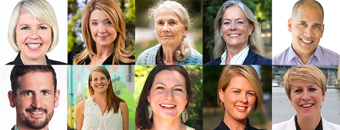

VanCity Council Power Play
Vancouver Sun:
TDC_ARTICLE_START
A Vancouver councillor says if he inadvertently breached conflict of interest rules, he is sorry.
“I didn’t act in bad faith, and I didn’t do anything to lie or deceive,” Green Coun. Michael Wiebe said Monday after an independent investigator said the politician is “disqualified from holding office” for breaching conflict rules.
The investigator’s report says that Wiebe, who has interests in a pub and a restaurant in Vancouver, was in “a clear conflict of interest” when he participated in two council meetings in May discussing a temporary patio expansion program for bars and restaurants. Wiebe voted in favour of the patio policy at the May meetings, although when related matters came up the following month, he declared a conflict and recused himself.
The investigator’s report, which has not been made public, was revealed Sunday by the Georgia Straight.
Wiebe said Monday he didn’t think he was in a conflict in the May meetings, noting that the patio program was citywide, potentially affecting thousands of restaurants, cafes, bars and breweries. Wiebe believes the policy, which aims to help businesses remain viable and operate safely during the COVID-19 pandemic, is good for the whole hospitality sector and the city in general, and did not specifically benefit his businesses over others.
Wiebe’s financial disclosures, which are public, list him as owner-operator of Mount Pleasant’s 8 1/2 Restaurant and an investor at Gastown’s Portside Pub. The city approved 8 1/2 in June for one of the first temporary patio expansions, and Portside received approval four weeks later. Permitting is handled by city staff, and not voted on by council.
TDC_ARTICLE_STOP
This seems like a pretty open and shut case of corruption, or as I like to call it, parasitical behaviour by a shitbag, right? It’s fine to own a bar or restaurant, it’s not fine to refuse to abstain from a vote that so clearly and obviously has financial impact on you personally. Keep reading, the plot thickens.
TDC_ARTICLE_START
Vancouver lawyer Raymond Young was asked to investigate and wrote the report, which Postmedia has reviewed. In it, Young recommended “it would be appropriate for Wiebe to resign his seat on council.”
Redmond said Monday that recent debates at the federal level in both Canada and the United States have underlined the importance of conflict of interest rules.
“If you ignore what people think of as small breaches of conflict of interest, it pretty soon leads to bigger breaches,” Redmond said. “Unless people actually stick by the rules and pay attention to them, public trust in democracy — which is already pretty low — is going to be undermined even further.”
Redmond said he doesn’t know Wiebe and has nothing against him personally, but “considering the clear findings” in the report, he believes Wiebe should resign.
TDC_ARTICLE_STOP
Leave it to a fucking lawyer to have the bullshitese to call someone else out on their parasitism. Lawyers have a clear and obvious conflict of interest for every fucking law that they pass, since the side effects have impacts on them or their colleagues, one way or another. And as far as the fake and gay “faith in democracy,” argument, well I think that’s a ship that’s long since sailed. Nobody my age believes in Donormocracy, a fake and gay political system where tightly controlled elections between slightly warring factions of donor controlled politicians are used to justify a feudal system where the peasants never get anything they want.
My faith is not shaken because some shitbag did some run of the mill bullshit designed to put money in his pocket at the potential expense of the health of society at large. My faith is shaken because the mass murder propagandists who lied us into Iraq and Afghanistan have not been punished in the slightest despite the massive pseudo-private and government censorship regime we have. My faith is shaken when Wallace Wong openly admits to diagnosing orphaned children as young as 2 years old with “gender dysphoria,” and recommending that they get sterilizing hormones as soon as they are 13 years old. My faith is shaken when politicians year after year, election after election, absolutely refuse to do what the people want, despite public opinion being easy to figure out on all important issues.
TDC_ARTICLE_START
The Non-Partisan Association called on Wiebe to “do the right thing and resign.”
If Wiebe does not resign, the Vancouver Charter provides other options for his removal. A group of 10 Vancouver voters can apply for a court order to have him removed or the city can apply to the courts, with the approval of two thirds
Mayor Kennedy Stewart said in a statement Monday that he received the investigator’s report Saturday and is “reviewing it to determine my next steps,” which could include making recommendations to council.
Wiebe said that although the report is complete, the process is not, so he doesn’t want to say too much now. Asked if he was considering resigning, Wiebe said he’s not making any decisions while the process is underway.
“I’m going to have to see what happens and take my fate,” Wiebe said. “Obviously, I’m in this process and I’m not sure where it’s going to take me.”
TDC_ARTICLE_STOP
To add onto what I wrote earlier, I don’t believe that this guy is being potentially removed as some check and balance on power. I think this guy ended up on the wrong end of some internal power play. To explain what I mean, the Non-Partisan Association, what do you think that is? Did you know that’s a political party? The 2018 Vancouver Municipal Election saw the election of 10 councillors to the Vancouver City Council. Five of them, Melissa De Genova, Colleen Hardwick, Lisa Dominato, Rebecca Bligh, and Sarah Kirby-Yung (yeah, her) are members of the NPA. Michael Wiebe is one of three Green Party members, with Adriane Carr and Pete Fry being the others. For the record, the other two members are Jean Swanson of the hilariously named Coalition of Progressive Electors (COPE), and Christine Boyle of OneCity. For the record, all of these people are 100% not our people. Christine Boyle is particularly irksome, although I’ll get to her another time.
Left->Right: Bligh, Boyle, Hardwick, Fry, Carr, Mayor Kennedy Stewart, De Genova, Swanson, Weibe, Dominato, Kirby-Yung
And yes, there are no normal people on VanCity council already. That doesn’t mean there can’t be serious and vicious infighting between Globo, Homo, and Schlomo. Actually, Michael Wiebe seems mostly interested in expanding public parks and urban green spaces in Vancouver, which in principle is fine. Yes, the Green Party members of the VanCity council are the least bad. Think about that, but don’t lightswitch brain into supporting them.

The important takeaway is that if Michael Wiebe, or really anyone on VanCity Council can be gotten rid of, NPA will have a majority, since their 5 seats will now be enough to do whatever they want in a council of 9. This is why it’s so important for people to understand that “news organizations,” are nothing more than enemy propaganda outlets. It’s very easy to look at this story and take it at face value, but the question we should be asking is “why are these propaganda outlets pushing this particular story? What’s their angle?”
For what it’s worth, I’ve seen this story repeated by The Globe and Mail, Global News, The Vancouver Sun, The Georgia Straight, and others. Did you notice how the Georgia Straight somehow got hold of a report that isn’t yet public? Clearly it was leaked, and leaked on purpose. This is a propaganda blitz, and these people’s fake arguments about “restoring people’s faith in the democratic system and blah blah,” are just that, fake.
We don’t have a dog in this fight, but it’s something we need to keep our eye on. It’s rare to see a gay-op happening to our enemies, and the cunts at NPA are showing us how it’s done.